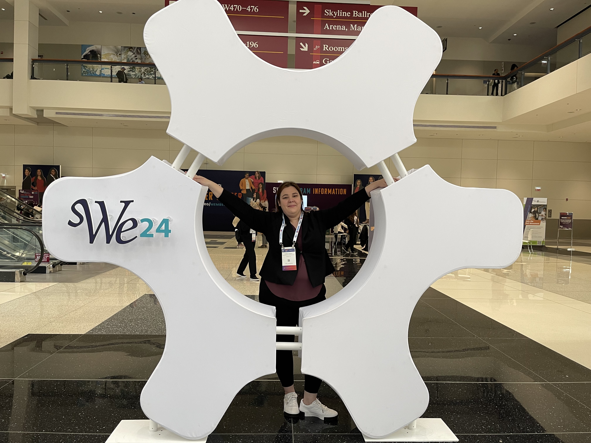
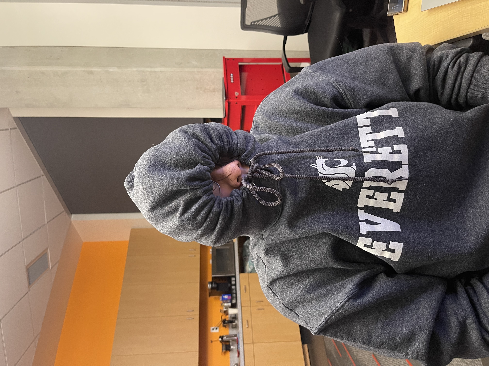

We created C.M.D. because we believe the best things in life happen when people come together. Whether it's a morning hike with strangers who become friends, a neighborhood potluck, or a spontaneous coffee run, your community is what makes a place feel like home.
We noticed in a world more digitally connected than ever, people were feeling more isolated. Social media gave us followers, but not friends. Notifications, but not neighbors.
So we built C.M.D. — a platform designed to get people off their screens and into their communities. We wanted to make it effortless to discover what's happening nearby, to join a pickup game, attend a local workshop, or simply find someone to grab coffee with.
This isn't just a website to us. It's a reflection of what we value most: genuine human connection, shared experiences, and the magic that happens when people show up for each other.
Three friends who love software, love people, and decided to combine the two.

Co-Founder, Developer, & Designer
I’m a software engineering student who enjoys building software that connects people and solves real problems. I’m especially interested in front-end development and user experience. Outside of coding, I organize industry events and stay active in the engineering community.
Co-Founder, Developer, & Designer
I believe great design can break down barriers and make communities more accessible. I love creating spaces — digital and physical — where people feel welcome and inspired.

Co-Founder, Developer, & Designer
Community has always been at the heart of everything I do. I built C.M.D. because I saw how technology could amplify the human desire to connect, share, and grow together.